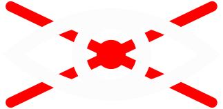

Deze website is niet
Deze website is niet
toegankelijk
97,4% van 's werelds top één miljoen websites biedt geen volledige toegankelijkheid. Wij bij Digital Natives maken website voor alle mensen. Wij vinden het belangrijk dat iedereen het web kan gebruiken.
De screenreader leest test van stuk naar stuk. Daarin willen we jou meenemen om te ervaren hoe moeilijk het om op deze manier door een website hen te beweken. Daarom hebben wij een manier bedacht hoe het voeld om niets te zien en alles 1 voor 1 te bekijken.
Klip op de gebleurde blokjes om de verborge text te onthullen